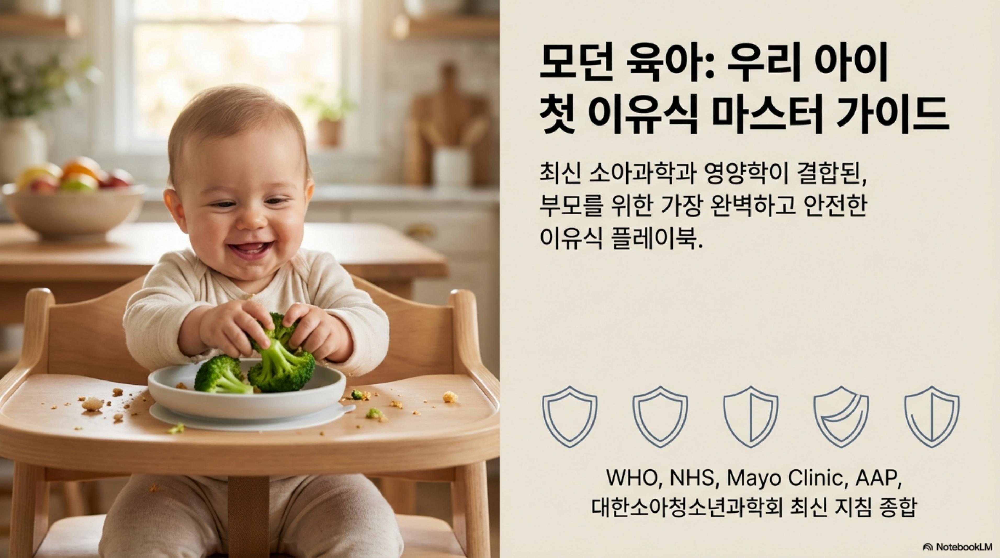

📍 지금 단계
📊 전문가 이유식 가이드 슬라이드
WHO, AAP, 대한소아청소년과학회 최신 지침 종합 (NotebookLM 생성)

1 / 17
📚 NotebookLM × 소아과 전문의 (정유미, 하정훈) 소스 기반
🎧 이유식 오디오 가이드
"6개월 철분 절벽과 땅콩 알레르기의 반전" — 들으면서 이유식 준비하세요
🎧 NotebookLM Audio Overview — 전문가 소스 기반 AI 생성
🥣 농도 가이드
단계별로 이렇게 달라져요
〰️
초기 (6개월)
묽은 미음
10배죽 · 물처럼
10배죽 · 물처럼
🫗
중기 (7~8개월)
걸쭉한 죽
7배죽 · 2~3mm 입자
7배죽 · 2~3mm 입자
🥄
후기 (9~11개월)
진밥
5배죽 · 5~7mm 덩어리
5배죽 · 5~7mm 덩어리
🍚
완료기 (12개월+)
일반밥
1cm 덩어리
1cm 덩어리
대한소아청소년과학회 이유식 가이드라인
📏 크기 가이드
●
초기 — 으깬 것
입자 없이 부드럽게. 체에 걸러도 좋음
◉
중기 — 2~3mm
혀로 으깰 수 있는 크기. 두부 정도
◎
후기 — 5~7mm
잇몸으로 씹는 연습. 바나나 정도 무름
○
완료기 — 1cm
어금니로 씹기. 어른 반찬 잘게 썬 것
⏰ 하루 스케줄
💡 핵심 원칙
이유식은 수유 전에 먹이세요. 배고플 때 이유식을 더 잘 받아들여요.
대한소아청소년과학회
📋 3일 규칙
새 식재료를 안전하게 도입하는 방법
1
Day 1 — 첫 시도
🆕 새 식재료 1숟가락만. 4시간 후까지 반응 관찰
2
Day 2 — 양 늘리기
같은 식재료, 양을 조금 늘려서. 계속 반응 관찰
3
Day 3 — 최종 확인
정상량으로 시도. 이상 없으면 ✅ 안전 식재료!
🚨
이상 반응 시
즉시 중단! 2주 후 재시도. 심하면 소아과 방문
WHO 보완식 가이드라인 + AAP
🎨 5색 균형이란?
다양한 색상 = 다양한 영양소 = 편식 없는 아이
빨강 — 항산화, 면역력
당근, 토마토, 사과, 소고기
초록 — 비타민, 미네랄
애호박, 브로콜리, 시금치, 아보카도
노랑 — 에너지, 비타민A
고구마, 단호박, 바나나, 달걀노른자
흰색 — 면역, 소화
쌀, 감자, 두부, 배
보라 — 안토시아닌, 항산화
비트, 자두, 가지, 블루베리
WHO — 다양한 색상의 채소·과일 섭취 권장
⚙️ 설정
기록은 유지됩니다